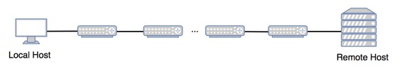

Consider a situation when you are not able to access a website and can access other websites. You would want to know if this is a problem with your network, some intermediate network or with web server. How do you figure out?
You can use Traceroute.
What is traceroute?
Traceroute is a widely used command line utility available in almost all operating systems. It shows you the complete route to a destination address. It also shows the time taken (or delays) between intermediate routers. Isn’t it great? Below is an example on Windows operating System.
{kind=link}
What does above output mean?
The first column is serial number for intermediate routers. In above output, three packets are sent to every hop to get good estimate of delays for every router. The three columns show time taken by three different packets. The last column is IP/Name of intermediate routers.
The output shows three delay for first hop, followed by delays for second hop and so on.
What is command in Linux and other Operating Systems?
In Windows, as shown above, command name is “tracert”, but in Linux, Unix and Apple MAC OS, command is “traceroute”.
How does traceroute work?
As shown in below diagram, there are intermediate routers between source and destination.

{kind=link}
It sends many packets toward the destination.
The first set of packets (3 packets in above example) are sent in a way that they are dropped by first intermediate hop and a control message is received from first intermediate node to get the time estimation for first hop.
The second set of packets (3 packets in above example) are sent in a way that they are dropped by second intermediate hop and a control message is received from second intermediate node to get the time estimation for first hop.
How does traceroute make sure that a packet is dropped at i’th hop?
It uses TTL field for this purpose. TTL is set as 1 for first packet(s), then 2 and so on until destination is reached.
How is total time estimated?
When a packet is dropped, the router sends an ICMP Time Exceeded message back to the source. That is how source figures out total time.
Traceroute is a widely used command line utility in networks.
References:
https://www.youtube.com/watch?v=wTncuOHQbMw&index=5&list=PLkHsKoi6eZnzJl1qTzmvBwTxrSJW4D2Jj